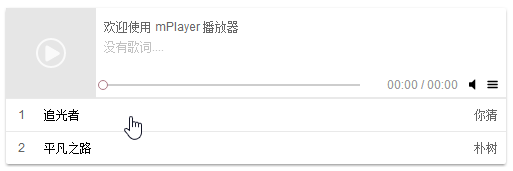

在用jQuery的时候就知道对于表格的行或者列表的项添加事件的时候要使用on而不是直接添加事件。因为列表项和表格的内容经常是或被更新的,如果对一个位置添加事件,当这个位置的html被替换后,之前添加的时间也会消失的
$(selector).on(event,childSelector,data,function)
后来才知道这个叫做事件委托-_-
最近再写播放器的时候也遇到了使用的场景,就是播放器的播放列表的点击事件，由于是使用原生JS写的,所以查阅了下关于JS时间委托的内容

JS时间委托的原理很简单,就是利用了事件冒泡,对于table、ul、ol来说，里面的tr和li是经常变化的，而最外层的table、ul、ol是不变的，所以可以设置事件在table、ul、ol身上，当事件传播到上层的时候可以判断子元素有没有被委托的事件，有就执行，就是这么简单。。。
错误代码,为好多元素添加了事件，而且不能适li的动态变化
var lis = document.getElementById('ul').getElementsByTagName('li');
for (var i = 0; i < lis.length; i++) {
lis[i].onclick = function () {
alert('ok');
}
}
事件触发的DOM的Event对象提供了一个属性叫target,代表事件触发位置的DOM
所以可以这么写
var ul = document.getElementById('ul');
ul.addEventListener("click", function (ev) {
var ev = ev || window.event;
var target = ev.target || ev.srcElement;
if (target.nodeName.toLowerCase() === 'li') {
alert('ok');
}
});
但是对于下面的情况,当点击a或者p标签的时候,上面的方法并不执行，因为target.nodeName为a或p并不是li
<ul id="ul">
<li>
<a>45</a>
<p>12</p>
</li>
<li>2</li>
<li>3</li>
<li>4</li>
<li>5</li>
</ul>
所以改造代码如下
var ul = document.getElementById('ul');
ul.addEventListener("click", function (ev) {
var ev = ev || window.event;
var target = ev.target || ev.srcElement;
while (target !== ul) {
if (target.tagName.toLowerCase() === 'li') {
alert('ok');
break;
}
target = target.parentNode;
}
});
或者下面,path是冒泡的路径
var ul = document.getElementById('ul');
ul.addEventListener("click", function (ev) {
var ev = ev || window.event;
var path = ev.path;
for (var i = 0; i < path.length; i++) {
if (path[i] == ul) {
break;
}
if (path[i].nodeName.toLowerCase() === 'li') {
alert('ok');
}
}
});